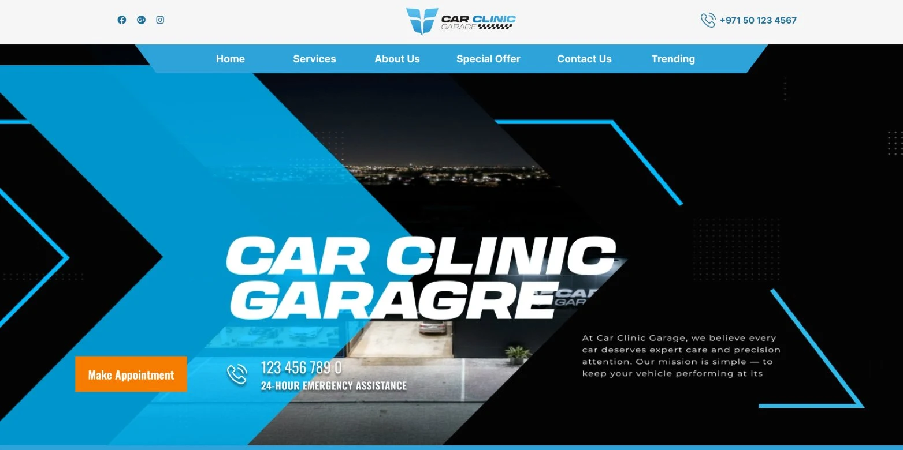
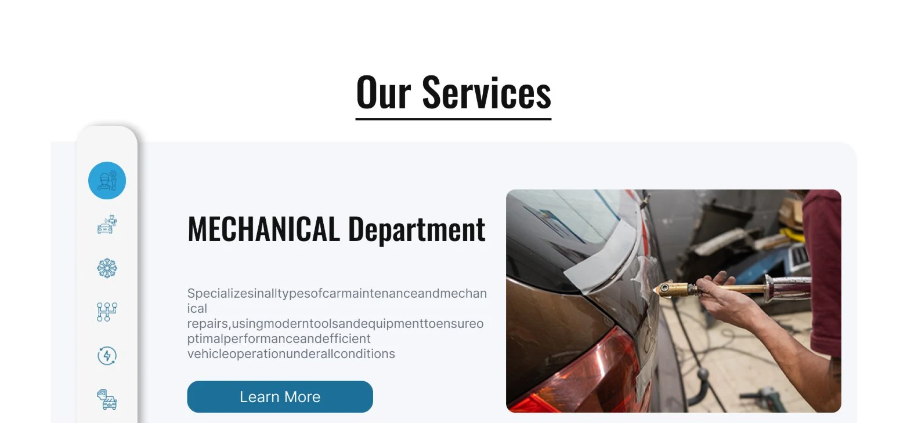
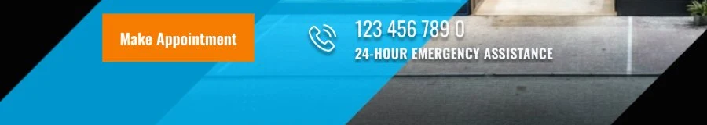
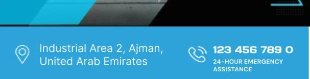
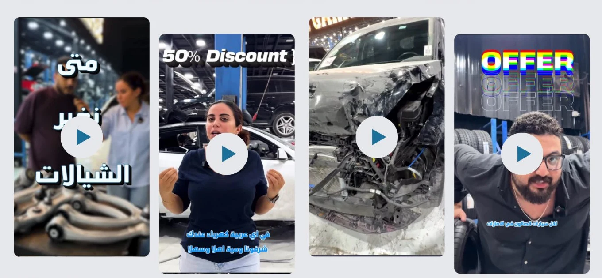

خدمة عالية الثقة، لسه لازم تحس بالحماس.
Car Clinic Garage بتشتغل على كل حاجة من العربيات العادية لحد لامبورجيني، بنتلي، وأستون مارتن — بريف لازم يتقرا كتقني وموثوق لحد بيسلّم عربية فاخرة، بس في نفس الوقت يحمل حيوية براند أداء عالي، مش دليل خدمات عادي وممل.
النطاق هنا كان تصميم UI/UX في فيجما.
نثبت مصداقية الورشة قبل ما حد يقرا قايمة خدمات.
لورشة بتشتغل على عربيات بأسعار ستة وسبعة أرقام، مشكلة الثقة بتسبق مشكلة الخدمة — الزائر لازم يصدّق إن الورشة قادرة قبل ما يهمه إيه اللي في قايمة الأسعار.
لوجوهات البراندات كمصداقية فورية
صف بالماركات اللي الورشة بتخدمها — من لامبورجيني لحد مرسيدس — موجود تحت الهيرو على طول، قبل أي كلام عن الخدمات.
أرقام مع جاليري حقيقي
كروت إحصائيات (أكتر من 1000 خدمة، أكتر من 2500 عميل) معززة بجريد صور حقيقي من المنشأة، مش مجرد كلام بدون دليل.
فيديو فين الجمهور موجود فعلًا
كليبات قصيرة — برومو، عرض خصم 50%، صورة قبل تصليح حادث — موجودة جوه جريد الصفحة نفسه، بالفورمات الرأسي اللي الناس متعودة تتابعه فعلًا.
نظام بلونين من الأزرق — سيان فاتح للحيوية، أزرق حبري للسلطة.
سيان سماوي فاتح بيحمل شريط النافيجيشن، الأشكال القطرية المُبرزة في الهيرو، وتاب الخدمة النشط — اللون بيعمل شغل "سريع، عصري، تقني". أزرق حبري أغمق بيحمل الأزرار، أرقام الإحصائيات، والفوتر — اللون بيعمل شغل "راسخ، موثوق". لون برتقالي واحد محجوز للأكشن الأهم على طول الصفحة: حجز موعد.

الباليت فاضلة منضبطة لصفحة مزدحمة ومليانة صور — لونين أزرق، أسود واحد، برتقالي واحد، سطحين نيوترال، ورمادي نص داعم — عشان الهيرو، الإحصائيات، الجاليري، وسكاشن الفيديو كلها تتقرا كموقع واحد.
عنوان EN
Anton
نص EN
Poppins
الألوان والخطوط مأخوذة مباشرة من الموقع الحي — مفيش ملفات مصدر اتسلمت في هذا المشروع.
شريط الـCTA تحت الهيرو بيتحول لشريط موقع.
على الديسكتوب، الشريط تحت هيدلاين الهيرو بيجمع زر "Make Appointment" مع خط الطوارئ على مدار الساعة — زوج يركز على التحويل لزائر خد قراره بالفعل. على الموبايل، نفس الشريط بيسيب الزر ويقدّم عنوان الورشة بدل منه، لسه جنب رقم التليفون — أولوية مختلفة لحد أقرب إنه يبحث "ورشة سيارات قريبة مني" وبيقرر هل يستاهل يروح.


مُسلَّم كنظام جاهز للبناء، عنصر بعنصر.
التسليمة كانت ملف فيجما مفصّل بالكامل: عنصر تاب الخدمة الرأسي، بلاطة الإحصائية، شريط لوجوهات البراندات، وباترن جريد الفيديو الأصلي — كل واحد منهم مُسلَّم كبلوك قابل لإعادة الاستخدام، عشان فريق تطوير مختلف يقدر يجمّع الصفحة بدون ما يخمّن المسافات أو الحالات.

شوية قرارات بتتقرا كمقصودة، مش ديكور.
لما بشوف الشغل ده تاني بعين UX، ثلاث قرارات بتعمل أكتر بكتير من اللي تبدو عليه:
لونين أزرق بيعملوا شغلين مختلفين
السيان الفاتح بيحمل الحيوية في الهيرو والنافيجيشن، والأزرق الحبري بيحمل السلطة في الأزرار والإحصائيات — لون واحد مش مطلوب منه يعمل الاتنين.
الماركات المخدومة قبل قايمة الخدمات
شريط الثقة بلوجوهات البراندات موجود بين الهيرو وAbout، قبل أي كلام عن الخدمات — المصداقية بتثبت قبل العرض.
فيديو أصلي، مش إمبيد سوشيال
الأربع كليبات الرأسية موجودة جوه جريد الصفحة نفسه بأزرار تشغيلها الخاصة، فالزائر بيتابع بدون ما يسيب الصفحة ويفتح أبلكيشن.
بانل واحد بالتابات بدل ست صفحات خدمات منفصلة.
"Our Services" بتستخدم بانل واحد بتابات أيقونات رأسية بيبدّل محتواه في مكانه، فالزائر يقدر يقارن Mechanical، Bodywork، AC، Transmission، Electrical، وDetailing من غير ما الصفحة تعمل ريلود لكل واحدة.
ورشة متخصصة لسه تبان كإنها متبنية للسوبركارز.
في أي سكشن الزائر يوصله، نفس نظام السيان والأزرق الحبري، نفس معاملة الهيدلاين العريضة المكثفة، ونفس الإثبات بالصور والفيديو ماشيين — بيزنس خدمي يعتمد على الثقة أولًا، بحيوية براند أداء عالي.